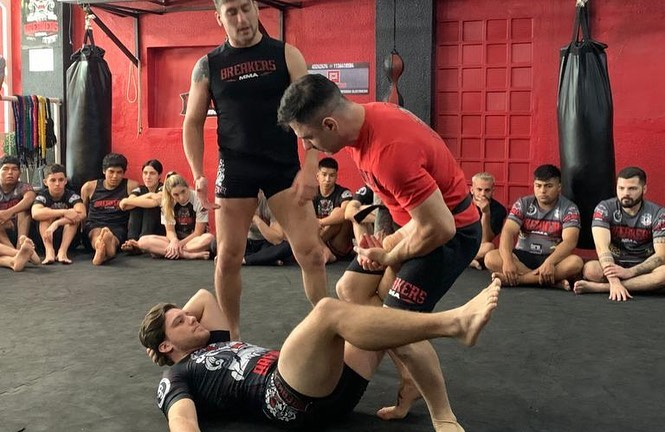
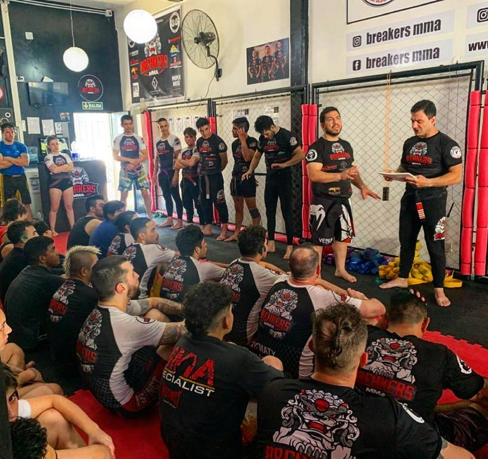

ACERCA DE FAVIO PICAPIEDRA MARTINO
Su pasión por las artes marciales inicio a la corta edad de 4 años, con la curiosidad de esa edad viendo las películas de Artes Marciales de Bruce Lee, intentando copiar los movimientos que veía le pidio a su madre que lo lleve a aprender a un instituto. Comenzó su aprendizaje en el Colegio Nuestra Señora de Fátima donde practicaba Taekwondo WTF con Oscar Sbagliati hasta los 12 años obteniendo un cinturón negro juvenil. A sus 13 años el Profesor le aconsejó que por exceso de contacto busque otra arte marcial sugiriéndole que buscara un deporte de combate acorde a su energía. Luego de dos años de no practicar artes marciales, continuó su actividad deportiva con otras disciplinas, retomando Full Contact a sus 16 años, pasó por diferentes academias sin encontrar donde sentir su lugar de pertenencia. A sus 19 años comienza una búsqueda intensa coincidiendo con los inicios del Kick Boxing, practicando en sus ratos libres dentro de las posibilidades de esos tiempos, cuando los conocidos dojos de hoy eran sólo gimnasios con horarios específicos y limitados para el deporte.
NUEVOS COMIENZOS
En el año 1999 su tío le comenta de una persona llegada del extranjero hacía unos meses, y que había comenzado a dar clases en su casa de Artes Marciales no conocidas en Argentina. Inmediatamente fue a ver y probar de qué se trataba, descubriendo Artes marciales y deportes de combate desconocidos hasta ese momento como el Jiu Jitsu, Boxeo y Muay Thai. Sorprendido y emocionado por descubrir lo que tanto había buscado incansablemente, el conocer y aprender el sistema de agarres, la efectividad de las distintas técnicas del Jiu Jitsu haciendo que el tamaño de su oponente no importe y el Muay Thai sacó a la luz su estado natural donde el utilizar las rodillas, codos, barridas y patadas con la tibia le hicieron conectar con su esencia, vislumbrando el placer del deporte que le generó un esperado gran entusiasmo.
DEBEMOS LUCHAR POR NUESTROS IDEALES INCANSABLEMENTE
Entrenando en este lugar y con toda su energía puesta ello, continuó con sus ideales
comenzando a dar clases
en distintos lugares de la Ciudad de Buenos Aires, llegando a su corta edad a tener 7 grupos de alumnos
en
diferentes sedes con su sello personal, lo que le permitió sentir y conectar con su energía interior y
transmitir lo q sentía por las Artes Marciales desde pequeño, generando de ello un estilo de vida y
profesión.
Con visión y proyección de futuro, comienza a dar entidad a su proyecto diseñando y fabricando sus
equipos
de entrenamiento.
Luego comenzó con la organización de eventos y torneos internos en uno de los clubes donde daba
clases junto con su maestro con quien en ese momento pensaban en iniciar las graduaciones de Artes
Marciales
Mixtas (MMA) que combinaban todas las artes marciales que practicaban.
Comenzó a competir en las disciplinas de Muay Thai, Kick Boxing y Grapling por separado en el año 2004
con
contundentes victorias. En el año 2006 comienza a integrar el Judo a su rutina de entrenamiento sumando
una
nueva arte marcial.
El año 2007 marca un ante y un después en la historia de su carrera, debutando profesionalmente en su
primer
competencia de MMA en el Club Malcon de la Ciudad de Buenos Aires con un contrincante de amplia
experiencia
(8 peleas, su récord de 7-1), a quien le gana por fallo unánime, continuando su apasionada carrera a
nivel
nacional e internacional con un récord de 7-3, compitiendo en dos oportunidades en el Luna Park, cuna de
grandes e históricos boxeadores, formando parte de la historia del deporte de Combate Argentino.
Simultáneamente compitiendo en otras disciplinas, viajando al exterior para afianzar e incorporar nuevos
conocimientos y competir en lugares donde este deporte ya tiene bases muy sólidas como Brasil, México y
EEUU.